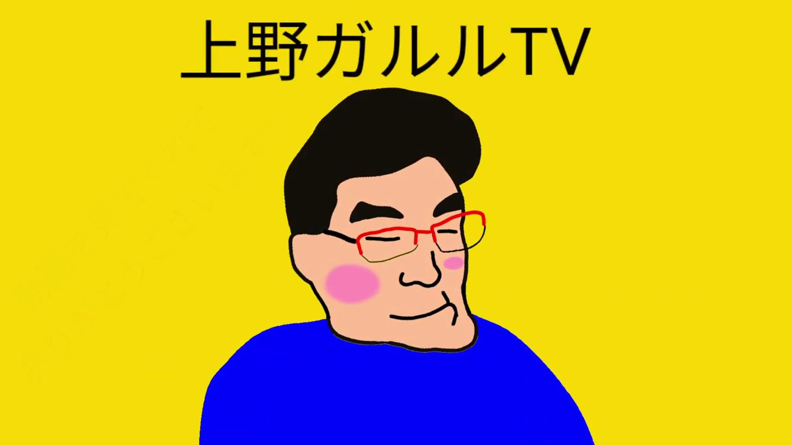

PROFILE
YouTube歴10年以上のベテランクリエイター！
🚀
好きな話題：
未来の話をすること
🚗
好きなもの：
カーナビ
✨
将来の夢：
不老不死になること！
▶ メインチャンネルはこちら
MESSAGE
真面目負けて！動画見てくれてありがとうございます。
チャンネル登録、高評価、コメントよろしくお願いします。
他のSNSもチェックお願いします！
東京もいろいろ お願いします YouTube のチャンネルをお願いします お願いできます お願いします YouTube のコメントもお願いします YouTube のチャンネルをお願いしませあ 願いできます お願いントもお願いし、ます！
SNS & BLOG
🐦 Twitter (@uenogalulu)
🎵 TikTok (メイン)
📷 Instagram
📘 Facebook
✍️ 上野ガルルブログ
📞 Skype: galugalugaluchan